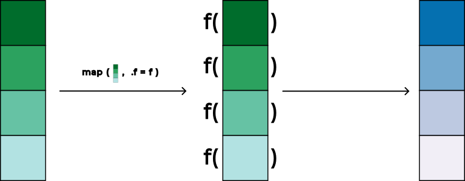
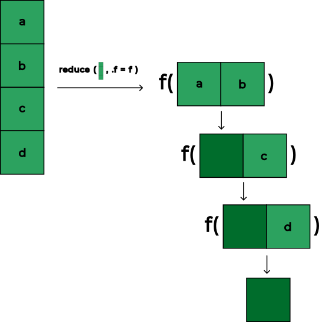

¿Cómo se utiliza el paquete purrr con vectores atómicos y listas?
¿Cuál es la estructura de las funciones y en particular de las funciones anónimas en R?
¿Cómo funcionan las funciones map(), reduce() y list_rbind() del paquete purrr?
Nota 19.1
Para desarrollar el contenido de este capítulo es necesario que crees una nueva carpeta llamada 019_funciones-anonimas-purrr-en-r y dentro de ella genera el archivo 001_funciones-anonimas-purrr.R, siguiendo las pautas de la Sección 4.4.
19.1purrr
El paquete purrr es el componente del tidyverse diseñado para facilitar la programación funcional en R (Wickham, 2023, Capítulo 26). En el análisis de datos es habitual enfrentarse a tareas repetitivas donde se debe aplicar la misma operación a múltiples elementos independientes, tales como importar decenas de archivos desde una carpeta o transformar varias columnas de manera simultánea.
Tradicionalmente, la repetición de tareas en programación se resuelve mediante bucles imperativos como for o while. Aunque los bucles son válidos, suelen requerir una considerable cantidad de código repetitivo, como inicializar previamente estructuras vacías para almacenar los resultados, gestionar manualmente variables de índice y controlar los límites de la iteración.
En contraste, la programación funcional implementada en purrr sustituye los bucles tradicionales por funcionales (en inglés functionals). Es decir, funciones de orden superior que reciben una función como argumento y la aplican de forma sistemática a cada uno de los elementos de una estructura de datos (Wickham, 2019, Capítulo 9). Esto permite expresar directamente qué transformación se desea realizar sobre cada elemento en lugar de especificar cómo administrar los pasos del ciclo, dando lugar a un código más conciso, legible, expresivo y fácil de depurar.
19.2 Vectores
Para comprender las herramientas de iteración que ofrece purrr, es indispensable profundizar en las estructuras de datos sobre las cuales opera: los vectores. En R, los vectores constituyen la estructura de datos más básica e importante y prácticamente cualquier objeto más complejo se fundamenta en ellos (Wickham, 2019, Capítulo 3).
Los vectores en R se dividen en 2 categorías:
Vectores atómicos (en inglés atomic vectors): colecciones unidimensionales y homogéneas donde la totalidad de sus elementos debe pertenecer obligatoriamente al mismo tipo de datos básico.
Listas (en inglés lists): colecciones unidimensionales pero heterogéneas donde cada elemento puede poseer un tipo de datos diferente y albergar objetos de cualquier longitud y complejidad.
En el Sección 10.2.5 se presentó la Tabla 10.2, en la cual se expusieron algunos de los tipos de datos más comunes utilizados en R, diferenciando entre vectores atómicos (logical, integer, double, character), listas (list) y objetos integrados como factores y fechas (factor, ordered, Date).
19.2.1 Vectores atómicos
Los vectores atómicos son estrictamente homogéneos donde R no permite almacenar elementos de distinta naturaleza en un mismo vector atómico. En R existen 6 tipos de vectores atómicos: logical, integer, double (cuyo sinónimo habitual en R es numeric), character, complex y raw.
Nota 19.2
En la Tabla 10.2 del Sección 10.2.5 únicamente se incluyeron los tipos logical, integer, double y character. Los tipos complex (como por ejemplo números complejos 1 + 2i) y raw (relacionados con el almacenamiento de bytes binarios puros) no fueron mencionados allí debido a que corresponden a tipos de datos especializados, y donde no es necesario utilizar los tipos complex y raw para comprender la lógica del análisis de datos respecto a los temas expuestos en este libro.
Cuando se combinan elementos para conformar un vector atómico mediante la función básica c(), R exige homogeneidad. Si se intentan combinar valores de tipos diferentes, R aplica una regla de coerción implícita transformando automáticamente todos los elementos al tipo más flexible. Por ejemplo, convirtiendo enteros a caracteres.
19.2.2 Listas
A diferencia de los vectores atómicos, las listas son vectores heterogéneos y genéricos. Cada elemento de una lista no está restringido a un solo escalar de tipo primitivo. En ese sentido puede ser un vector, una función o una tabla de datos rectangular como una tibble.
Esta flexibilidad hace que la introducción de las listas sea estrictamente necesaria al realizar análisis de datos e iteración funcional. En muchas ocasiones se requiere manipular y conservar colecciones de objetos que no pueden incluirse dentro de un vector atómico sin perder su estructura.
Para ilustrar esta necesidad fundamental, supongamos que se dispone de 2 tablas de datos en tibbles independientes y se busca agruparlas en un solo contenedor para su posterior procesamiento, tal como se señala en el Listado 19.1:
Listado 19.1: Creación de una lista para almacenar tibbles independientes
# Cargar paquetes ----library(tidyverse)# Lista de tibbles ----list(tibble(x ="a", y ="b"),tibble(y ="c", z ="d"))
[[1]]
# A tibble: 1 × 2
x y
<chr> <chr>
1 a b
[[2]]
# A tibble: 1 × 2
y z
<chr> <chr>
1 c d
Al utilizar la función list(), tal como se observa en el Listado 19.1, R genera una lista con 2 componentes independientes: [[1]] y [[2]]. Cada uno de estos componentes conserva íntegramente su condición y estructura de tibble con sus respectivas dimensiones y columnas rectangulares.
En contraste, si se intentara utilizar la función c() para agrupar estas 2 tablas de datos, el resultado no conservará las tablas como entidades independientes, tal como se señala en el Listado 19.2:
Listado 19.2: Pérdida de la estructura tabular al utilizar la función c() con tibbles
# Intento de combinación con c() ----c(tibble(x ="a", y ="b"),tibble(y ="c", z ="d"))
$x
[1] "a"
$y
[1] "b"
$y
[1] "c"
$z
[1] "d"
Tal como se aprecia en el resultado del Listado 19.2, la función c() no crea una colección de 2 tibbles. En su lugar, R descompone internamente cada tabla en sus columnas y las concatena en una única lista “aplanada” de 4 vectores columna: $x, $y, $y, $z. Con ello se pierde por completo la identidad tabular rectangular de cada conjunto de datos original.
Por esta razón, las listas son el contenedor en R para almacenar tablas de datos múltiples y otros objetos. El paquete purrr utiliza tanto vectores atómicos como listas para iterar (Wickham, 2023, Capítulo 26). En cualquier flujo de trabajo funcional para análisis de datos, se identifica el vector sobre el cual se desea operar, como por ejemplo un vector atómico de caracteres con las rutas de varios archivos o una lista con las tablas importadas, y luego se itera a través de cada uno de sus elementos mediante una función.
19.3 Funciones
Para llevar a cabo una iteración funcional con purrr, no basta con disponer de un vector sobre el cual iterar. También se requiere una función que determine la acción que se ejecutará sobre cada elemento (Wickham, 2019, Capítulo 9). Las funciones permiten en R encapsular un conjunto de instrucciones reutilizables para automatizar cálculos repetitivos, evitar la duplicación de código y disminuir la probabilidad de cometer errores (Grolemund, 2014, Capítulo 1).
Para comprender cómo se construye una función en R, considera un ejemplo clásico de probabilidad en relación a la simulación del lanzamiento de una moneda donde existen 2 posibles resultados excluyentes, cara o cruz, tal como se ilustra en la Figura 19.1.
Figura 19.1: Dos caras de una moneda
En R, es posible simular este experimento mediante la función sample(), la cual extrae una muestra aleatoria a partir de los elementos provistos en el parámetro x, tal como se señala a continuación:
Listado 19.3: Simulación de un lanzamiento de moneda mediante la función sample()
En el Listado 19.3, la función sample() selecciona aleatoriamente un único elemento (size = 1) del vector moneda. Si se deseara simular más de 2 lanzamientos con esta moneda de 2 caras, no es posible hacerlo sin permitir la repetición de los elementos. Este aspecto se debe a que por defecto la función sample() realiza un muestreo sin reemplazo (replace = FALSE). Por lo tanto, para simular múltiples lanzamientos independientes es indispensable habilitar el muestreo con reemplazo mediante replace = TRUE, tal como se señala en el Listado 19.4:
Listado 19.4: Simulación de múltiples lanzamientos de una moneda con reemplazo mediante sample()
# Múltiples lanzamientos con reemplazo ----sample(x = moneda,size =3,replace =TRUE)
[1] "cruz" "cruz" "cruz"
Para aplicar a esta rutina una mayor flexibilidad, es posible parametrizar cada una de las opciones del experimento vinculándolas a nombres de variables independientes como lados, n_lanzamientos, con_reemplazo, antes de utilizar sample(), tal como se señala en el Listado 19.5:
Listado 19.5: Parametrización de las instrucciones para simular el lanzamiento de una moneda
Aunque el código presentado en el Listado 19.5 cumple su propósito, si se requiriera simular lanzamientos en distintas partes de un flujo de trabajo sería necesario copiar y pegar este bloque de código una y otra vez, modificando los valores manualmente. Este procedimiento resulta ineficiente y susceptible a inconsistencias donde la solución consiste en encapsular estas instrucciones dentro de una función.
En la Figura 19.2 se ilustran los componentes conceptuales y la anatomía estructural de una función en R (Grolemund, 2014, Capítulo 1) encapsulando estas instrucciones dentro de una función denominada lanzar_moneda.
Tal como se detalla en la Figura 19.2, una función en R se compone esencialmente de los siguientes elementos:
Nombre: el identificador asignado a la función mediante el operador <- para almacenarla en el entorno y poder utilizarla posteriormente. Siguiendo las convenciones de estilo de R, los nombres de funciones deben ser verbos concisos que indiquen con claridad la acción realizada como por ejemplo lanzar_moneda.
Parámetros: las variables declaradas dentro del paréntesis de function(...) corresponden a los valores que la función espera recibir para operar.
Argumento: el valor específico asignado a un parámetro al momento de invocar la función.
Argumento por defecto: valor predeterminado asignado a un parámetro en la definición de la función como por ejemplo, = c("cara", "cruz"). Si al llamar la función no se suministra un argumento para dicho parámetro, R utilizará automáticamente este valor predeterminado.
Cuerpo (en inglés body): el bloque de código encerrado entre llaves { ... } que contiene las instrucciones que se ejecutarán secuencialmente cada vez que se invoque la función.
Salida de la función (en inglés return value): el objeto o resultado que la función entrega a quien la llamó. En R no es obligatorio emplear una sentencia explícita de retorno como return() que utilizan otros lenguajes de programación. Por defecto, R retorna automáticamente el resultado de la última expresión evaluada dentro del cuerpo donde en este caso corresponde a lanzamientos.
De manera general, la sintaxis para construir una función en R responde al siguiente esquema:
nombre <-function(parametros) { cuerpo}
A partir de esta estructura, en el Listado 19.6 se encapsulan las instrucciones de simulación dentro de la función lanzar_moneda() sin definir parámetros iniciales, tal como se señala a continuación:
Listado 19.6: Definición de una función básica sin parámetros en R
Para hacer que lanzar_moneda() sea verdaderamente reutilizable y adaptable a diferentes escenarios, en el Listado 19.7 se agregan los parámetros n_lanzamientos y lados al asignarles argumentos por defecto, tal como se señala a continuación:
Listado 19.7: Definición de la función lanzar_moneda() con parámetros y argumentos por defecto
Una vez definida la función lanzar_moneda() con sus parámetros, es posible invocarla especificando el número de lanzamientos deseado mediante el argumento n_lanzamientos, tal como se señala en el Listado 19.8:
Listado 19.8: Invocación de la función lanzar_moneda() especificando el argumento n_lanzamientos
# Invocación de la función ----lanzar_moneda(n_lanzamientos =5)
[1] "cara" "cruz" "cruz" "cruz" "cruz"
19.4 Funciones anónimas
En el Listado 19.7 creaste una función formal a la cual se le asignó el nombre lanzar_moneda. Nombrar una función es indispensable cuando se trata de una operación compleja o cuando el objetivo es reutilizarla recurrentemente a lo largo de un flujo de trabajo.
Sin embargo, en los flujos de iteración funcional con purrr es muy común requerir funciones breves y que se utilizan exclusivamente en un único paso de transformación y que no vuelven a emplearse en el resto del análisis. En tales circunstancias, tener que inventar un nombre para cada función de un solo uso resulta contraproducente ya que sobrecarga el entorno global con variables innecesarias.
Para solucionar este inconveniente se introducen las funciones anónimas, que se conocen también como funciones lambda en otros lenguajes de programación. Una función anónima es una función que no tiene un nombre asignado (Wickham, 2019, Capítulo 9). A partir de la versión 4.1.0 de R, el lenguaje incorporó una sintaxis nativa y concisa para definir funciones anónimas mediante la barra diagonal inversa \(...) { ... }, la cual constituye una forma abreviada y equivalente a escribir function(...) { ... }, tal como se señala en el Listado 19.9:
Listado 19.9: Definición de una función anónima en R mediante la sintaxis nativa (...) { ... }
En el Listado 19.9, la expresión define una función anónima que recibe el parámetro x y que representa el número de lanzamientos a realizar donde devuelve los resultados muestreados con reemplazo. Como no está vinculada a ningún nombre mediante el operador <-, esta función existe únicamente en la expresión donde se evalúa.
Si bien es posible ejecutar una función anónima de forma inmediata rodeándola de paréntesis como por ejemplo (\(x) { sample(c("cara", "cruz"), x, replace = TRUE) })(3), su verdadero potencial se despliega al suministrarla como argumento .f a las funciones de iteración del paquete purrr, tal como se examinará en la Sección 19.5.
19.5map()
La función map() es la pieza central del paquete purrr(Wickham, 2023, Capítulo 26). Su propósito fundamental es transformar un vector de entrada aplicando una función a cada uno de sus elementos de manera independiente. En la Figura 19.3 se ilustra la representación gráfica del funcionamiento de la función map().

Figura 19.3: Representación gráfica de la función map()
Tal como se aprecia en la Figura 19.3, la función map() recibe 2 argumentos principales:
.x: un vector atómico o lista que contiene los elementos sobre los cuales se iterará.
.f: la función que se aplicará a cada elemento individual de .x.
Durante la ejecución, map() recorre ordenadamente cada elemento \(x_i\) del vector .x, evalúa \(f(x_i)\) y almacena el resultado en una posición correspondiente. La propiedad distintiva de map() es que siempre retorna una lista cuya longitud es exactamente igual a la cantidad de elementos presentes en el vector de entrada .x.
Para ilustrar este comportamiento, supongamos que deseamos simular experimentos de lanzamientos de monedas donde la cantidad de lanzamientos varía sucesivamente de 1 a 3, es decir el vector atómico 1:3. En el Listado 19.10 se utiliza map() pasando como argumento .f la función nombrada lanzar_moneda:
Listado 19.10: Aplicación de la función map() junto con una función nombrada
# Iteración con función nombrada ----map(.x =1:3,.f = lanzar_moneda)
En el Listado 19.10, map() toma el vector 1:3 y pasa sucesivamente el valor 1 a lanzar_moneda(n_lanzamientos = 1), el valor 2 a lanzar_moneda(n_lanzamientos = 2) y el valor 3 a lanzar_moneda(n_lanzamientos = 3). El resultado es una lista de 3 elementos señalados con las posiciones [[1]], [[2]] y [[3]], donde cada elemento alberga un vector de caracteres con el resultado de sus respectivos lanzamientos.
De forma completamente análoga, es posible alcanzar este mismo resultado sin necesidad de definir previamente la función lanzar_moneda, suministrando directamente una función anónima como argumento .f, tal como se señala en el Listado 19.11:
Listado 19.11: Aplicación de la función map() junto con una función anónima
Tal como se evidencia al comparar el Listado 19.10 y el Listado 19.11, ambas alternativas generan una lista con idéntica estructura. La ventaja de la función anónima en este contexto radica en que toda la lógica requerida se encuentra autocontenida dentro de la propia invocación de map(). Este patrón resulta útil para tareas como la lectura secuencial de múltiples archivos en un directorio, donde el vector de entrada corresponde a las rutas de los archivos y la función anónima ejecuta la importación de cada uno de ellos, tal como se implementará en el Capítulo 20.
19.6reduce()
Mientras que map() aplica una transformación independiente a cada elemento y devuelve una lista con la misma cantidad de elementos de entrada, la función reduce() del paquete purrr tiene como finalidad combinar progresivamente todos los elementos de un vector o lista hasta consolidarlos en un único objeto final (Wickham, 2023, Capítulo 26). En la Figura 19.4 se ilustra la representación gráfica del funcionamiento de la función reduce().

Figura 19.4: Representación gráfica de la función reduce()
Como se observa en la Figura 19.4, reduce() requiere:
.x: un vector o lista que contiene los elementos a consolidar.
.f: una función binaria, es decir, una función que acepta 2 argumentos y retorna un único valor como por ejemplo operaciones matemáticas de suma o producto o funciones de teoría de conjuntos como intersect() o union().
El mecanismo operativo de reduce() es acumulativo:
Toma el primer elemento (a) y el segundo elemento (b), y evalúa \(f(a, b)\).
Toma el resultado intermedio obtenido en el paso anterior y el tercer elemento (c), y evalúa \(f(f(a, b), c)\).
Continúa este proceso de manera recursiva hasta agotar todos los elementos de la colección, devolviendo un único valor consolidado.
Para ilustrar la utilidad práctica de reduce(), supongamos que se dispone de una lista con 3 vectores de caracteres denominados conjuntos y se desea encontrar cuáles elementos son comunes a los 3 vectores. Es decir, la intersección múltiple entre ellos. Aunque la función base intersect() únicamente puede comparar 2 vectores a la vez, combinarla con reduce() permite resolver esta operación para cualquier cantidad de conjuntos, tal como se señala en el Listado 19.12:
Listado 19.12: Identificación de elementos comunes en una lista de vectores mediante reduce() e intersect
# Lista de conjuntos ----conjuntos <-list(c("A", "B", "C"),c("B", "C", "D"),c("C", "D", "E"))# Intersección acumulativa ----reduce(.x = conjuntos,.f = intersect)
[1] "C"
En el Listado 19.12, reduce() opera secuencialmente de la siguiente manera:
Aplica intersect() entre el primer y segundo elemento, intersect(c("A", "B", "C"), c("B", "C", "D")), obteniendo como resultado intermedio c("B", "C").
Aplica intersect() entre dicho resultado intermedio y el tercer elemento, intersect(c("B", "C"), c("C", "D", "E")).
El resultado final devuelto es "C", el único elemento presente simultáneamente en los 3 vectores de la lista. Esta técnica resulta fundamental para el análisis de datos reales. En el Capítulo 20 utilizaremos esta misma lógica combinando map() y reduce() para identificar con exactitud cuáles columnas se encuentran presentes en la totalidad de los archivos anuales del examen Saber Pro antes de unificarlos.
19.7list_rbind()
Al procesar múltiples archivos mediante map(), el resultado obtenido es una lista en la que cada elemento es una tabla de datos independiente dentro de una tibble. Sin embargo, para realizar tareas de exploración, filtrado, modelado o visualización, es necesario reunir todas esas tablas individuales en un único conjunto de datos rectangular consolidado.
Para llevar a cabo esta tarea, el paquete purrr proporciona la función list_rbind(), la cual toma una lista de tablas de datos y las une o apila verticalmente por filas (Wickham, 2023, Capítulo 26). En la Figura 19.5 se ilustra la representación gráfica del funcionamiento de la función list_rbind().
Figura 19.5: Representación gráfica de la función list_rbind()
Tal como se detalla en la Figura 19.5, la ventaja de list_rbind() radica en que alinea automáticamente las columnas basándose en sus nombres y no en su orden posicional:
Si una columna está presente en todas las tablas, como la columna y en Figura 19.5, sus valores se concatenan verticalmente en una sola columna.
Si una columna existe únicamente en algunas tablas pero no en otras, como las columnas x y z en Figura 19.5, list_rbind() preserva dichas variables e imputa automáticamente el valor especial de datos faltantes NA en las filas de las tablas donde la columna no existía originalmente.
Para comprobar este comportamiento, consideremos una lista denominada tablas_datos compuesta por 2 tibbles con columnas parcialmente superpuestas, tal como se señala en el Listado 19.13:
Listado 19.13: Consolidación vertical de una lista de tibbles mediante la función list_rbind()
# Lista de tablas con columnas parcialmente coincidentes ----tablas_datos <-list(tibble(x ="a", y ="b"),tibble(y ="c", z ="d"))# Unión por filas ----list_rbind(tablas_datos)
# A tibble: 2 × 3
x y z
<chr> <chr> <chr>
1 a b <NA>
2 <NA> c d
En el resultado del Listado 19.13, list_rbind() consolida ambas tablas en una única tibble de 2 filas y 3 columnas. La primera fila conserva x = "a" e y = "b" asignando NA a z, mientras que la segunda fila incorpora y = "c" y z = "d" asignando NA a x.
Esta operación completa el ciclo fundamental de importación y consolidación de archivos múltiples que se desarrollará en el Capítulo 20. Primero se empleará map() junto con una función de lectura para importar cada archivo en una lista de tablas de datos. Luego se utilizará la función reduce() para identificar las variables comunes en las diferentes tablas de datos importadas. Posteriormente se utilizará list_rbind() para apilar todas las filas en un único conjunto de datos estructurado para realizar un análisis posterior.
![Diagrama conceptual que ilustra el funcionamiento de la función list_rbind(). A la izquierda se presentan 2 tablas de datos independientes dentro de una lista: la primera con columnas x e y (valores a y b), y la segunda con columnas y y z (valores c y d). La función list_rbind() apila ambas tablas por filas alineando la columna común y, generando a la derecha una tabla única consolidada con columnas x, y y z, e imputando valores NA en las celdas correspondientes a variables no observadas en cada tabla original.](images/list_rbind.png)